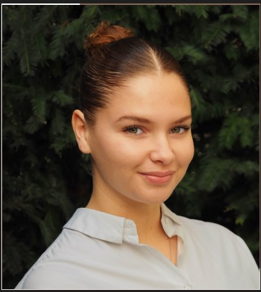

Lina Driss
Bienvenu sur mon profil!

Qui suis-je ? 🤔
Je m'appelle Lina Driss, j'ai 20 ans et je viens du Bourget. Je suis actuellement étudiante à Audencia Business School, à Nantes.
Viens découvrir mon école
Mon parcours
J'ai obtenu mon baccalauréat Economique et Social Mention très bien au Lycée Germaine Tillon au Bourget.
J'ai par la suite fait deux ans de prépa ECE au Lycée Claude Monet.
Je suis actuellement étudiante dans le Programme Grandes Ecoles d'Audencia.
Langues Parlées
- Francais : Langue maternelle
- Anglais : I have an intermediate level
- Espagnol : Tengo un nivel intermedio
- Arabe : 'atakallamu al-'arabiyah qualilan
Mes passions
Dans la vie de tout les jours je suis quelqu'un de très dynamique, je suis tout le temps occupée... Mais certaines activités me passionnent plus que d'autres...
Voyager 🌍: j'aime voyager car cela me permet de découvrir de nouvelles choses, de nouvelles cultures et d'en apprendre plus sur le monde
Lire 📚 : le fait de lire me permet de m'évader. En ce moment je lis ce livre : Soleil Amer de Lilia Hassaine
La natation 🏊‍: je pratique ce sport depuis mon enfance. C'est un excellent moyen pour réduire son stress.
Mes Projets
Je souhaite faire mon Master dans le Programme Gaia d'Audencia afin de me spécialsier dans les métiers du conseil spécialisés dans le secteur de l'économie sociale et solidaire.
J'aimerai travailler dans une entreprise à vocation humanitaire.